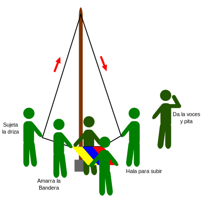

Honores a la Bandera Nacional
LA BANDERA NACIONAL O PABELLÓN NACIONAL JUNTO AL ESCUDO Y EL HIMNO NACIONAL, SE CONOCEN COMO LOS SÍMBOLOS PATRIOS, y representan todo lo bueno, honorable y hermoso de nuestro gran País, Venezuela.
Por tanto, es deber de cada Scout, tratar con respeto y amor estos elementos; y con ello honrar a todos y cada uno de los hombres y mujeres que han contribuido al bien de la Nación.
Partes de una bandera
Antes de explicar el Protocolo para las banderas, vamos a ver cada una de sus partes, esto para comprender mejor los términos que vamos a utilizar más adelante.

a. Indica la altura de la bandera “borde de vuelo”.
b. Envergadura o ancho.
c. El color de fondo de la bandera se llama campo.
d. Indica el “borde de izado”.
e. La cuerda con la que se iza o arria la bandera, se llama "Driza".
f. El mástil o asta, es el soporte o “palo” que sustenta la bandera desde su base.
La Patrulla de Servicio
La ceremonia de bandera está a cargo de una patrulla, que será denominada Patrulla de Servicio (conformada por 6 integrantes mínimo). Cada integrante tendrá una responsabilidad específica al momento de la ceremonia, de la siguiente manera:

- Un integrante coordinará la ceremonia, dirigirá al equipo y dará las indicaciones pertinentes (voces o silbatos).
- Dos integrantes se encargaran de la driza, quienes la desamarran o sujetan del asta, colocándola en forma de “V” invertida.
- Tres integrantes simultáneamente a lo anterior, se encargarán de desdoblar la Bandera Nacional, colocándose uno en frente de otro, y la tercera, colocado de espaldas al observador.
De existir otras banderas, debe agregarse a la Patrulla de Servicio tres (03) personas para cada bandera adicional.
Ceremonia de banderas
En la ceremonia de izar y arriar la Bandera Nacional se cumplirán los siguientes pasos. Una vez dadas las indicaciones por el Staff, la Patrulla de Servicio sale de la formación y ejecuta la ceremonia según el protocolo establecido.
1. La Patrulla de Servicio pasa al frente, con la bandera sostenida por uno de sus integrantes (los cuales se acomodan según lo indicado anteriormente).
2. Tres personas desdoblarán la bandera, de modo y perpendicular al suelo, frente al asta de bandera, y sujeta a la driza.
Dos personas a su vez despliegan la driza en forma de “V” invertida. Luego se procede a dar las señales para el saludo, todos los presentes le rendirán homenaje oportuno a la Bandera Nacional.
3. Las señales son ATENCIÓN, ALERTA, SALUDO y DESCANSO, estas se indican con 4 pitos.
4. Los participantes, al primer pito (Atención) quedan en silencio y pendientes de la ceremonia. Al segundo pito (Alerta) se colocarán con los brazos extendidos a ambos lados del cuerpo con vista a la bandera nacional con las piernas extendidas y juntas. Al tercer pito (Saludo) proceden a efectuar la Seña Scout.
5. Seguidamente se comienza a izar la Bandera Nacional de manera rápida, por el lado izquierdo del Observador, sostenida por los integrantes en las esquinas superiores hasta que esta se eleve lo sufi ciente.
6. Una vez que la bandera llega a la parte superior del asta, se dará el cuarto pito (Descanso).
7. La Patrulla de Servicio se forma nuevamente frente al asta, después de sujetada la driza, y a la voz del líder del equipo procede a efectuar el saludo, siguiente las 4 voces de mando (Atención, alerta, saludo y descanso). Seguidamente vuelve a ocupar su lugar en la formación.
Para la arriada de la Bandera es igual, solo que la Bandera se baja lentamente, y que la Patrulla de Servicio da las 4 voces antes de comenzar a bajarla. Por último, cuando se entregar de la Bandera para su custodia, se realiza el siguiente dialogo:
Quien entrega: Te entrego la Bandera para que la cuides y la honres como nosotros lo hemos hecho;
Quien recibe: Recibo esta Bandera para cuidarla y honrarla como ustedes lo han hecho.

Los adultos se formarán en una línea detrás del asta de Bandera, de modo que queden frente a las Unidades y con vista a la Bandera Nacional.
Consideraciones
La ceremonia será efectuada por un Equipo de Servicio, tomando en cuenta el pequeño grupo de la Unidad responsable de misma.
Tropa = 6 a 8 scouts en la patrulla.
Clan = 6 rovers que conformarán un equipo.
La Bandera Nacional se izará y arriara con todos los presentes (promesados y no promesados) en formación de:
Círculo de Parada para las Manadas.
Cuadrado para las Tropas.
Línea para los Clanes.
Cuando en la ceremonia estén presentes más de una Rama del Grupo Scout se formarán, todas las Unidades frente al asta de la siguiente manera:
Las Manadas en un solo Circulo de Parada, de modo que la mitad del círculo sea de Lobeznas y la otra mitad de Lobatos; colocadas en el centro de la formación de las Tropas.
Las Tropas en un solo Cuadro, de modo que la mitad del cuadro esté formado por Patrullas Femeninas y la otra mitad por Patrullas Masculinas.
Los Clanes en una sola línea, sin importar el orden de sus miembros en la Línea en la parte posterior del Cuadro de las Tropas.
En campamento, la arriada de Bandera por la tarde no es necesario llamar a formación a la unidad, solo se requerirá la presencia del equipo de servicio para efectuar la ceremonia.
Al escuchar las señales, todos los presentes en la actividad scout, desde el punto donde se encuentren, miran hacia la Bandera Nacional y siguen el protocolo anteriormente descrito.
Un cuarto y último pitazo o señal será la indicación de que ha finalizado la ceremonia y cada cual puede regresar a sus quehaceres.
Recuerde que la Bandera Nacional se iza por el lado izquierdo para el observador (entiéndase que el observador es aquel que esta en la formación).
Protocolo para la Bandera Nacional

• Cuando la bandera es colocada en una ventana o en un balcón, se puede situar de manera horizontal o vertical.
Para su correcta posición nos vamos a guiar por la franja amarilla y el borde de izado que es la parte más pegada al asta.
En cualquiera de estas dos formas debe disponerse siempre que la franja amarilla este en la parte superior (si se coloca de forma horizontal), o a la izquierda del espectador (si se coloca de forma vertical).
No se le debe clavar, grapar o dañar de ninguna forma.
 • La bandera debe ser izada después de las 6:00 a.m. y no debe permanecer enarbolada después de las 6:00 p.m.
• La bandera debe ser izada después de las 6:00 a.m. y no debe permanecer enarbolada después de las 6:00 p.m.
• Contrario a lo que generalmente se hace, la bandera NO debe izarse al compás del Himno Nacional, sino que este se canta después de izada la bandera.
• Si se va a enarbolar junto a otras banderas, debe ser colocada en el sitio de honor, que es el centro del grupo. Preferiblemente, cada bandera debe tener su propia driza, sino la Nacional debe ir arriba.
• Cuando se ice con banderas de otros países todas deben tener la misma altura y tamaño. En este caso, la de Venezuela no debe ser más grande por que entonces es una falta de respeto para los ciudadanos del otro País.
 • El tamaño del asta debe ser 6 veces más alto que el ancho de la bandera.
• El tamaño del asta debe ser 6 veces más alto que el ancho de la bandera.
• Cuando se use cruzada con otras banderas, la nuestra debe quedar a la izquierda del observador y su palo, por encima del otro (En Territorio Venezolano).

• Nuestra Bandera Nacional siempre debe estar más alta del resto de las Banderas con las cuales es izada. Salvo que sean banderas de otras naciones, como ya se explicó.
¿Cuándo se puede usar la bandera?
• En los días de fiesta cívica toda persona o institución puede adornar balcones y recintos con banderas y géneros con los colores de la Bandera o Pabellón Nacional.
• En las marchas, desfiles o paradas su uso está reservado a las instituciones de carácter ofi cial, pero pueden portarla también otras entidades cuando dichos actos se efectúen:
- En días feriados o por algún acontecimiento histórico
- En honor del Jefe del Estado o de naciones amigas, en sus días nacionales, con los huéspedes distinguidos de la nación.
- En memoria de los venezolanos ilustres extintos y en los funerales a los que asistan tales entidades.
- Cuando así sea decretado por las Autoridades Nacionales.
- Cuando exista un día de duelo, la bandera será izada a media Asta, subiendo la misma rápidamente hasta la cima y luego bajándola lentamente hasta el medio del Asta. Al momento de Arriarla, se subirá de nuevo a la cima y luego se bajará completamente.
 En todos las embarcaciones y aviones de matrícula venezolana también es obligatorio el uso de los colores nacionales.
En todos las embarcaciones y aviones de matrícula venezolana también es obligatorio el uso de los colores nacionales.

 1 Recuerda respetar la bandera, no la uses como pañuelo, para cubrirte, como una prenda ni como adorno de tu vestimenta. A menos que sea un uniforme ofi cial de una delegación nacional, o una pieza del atuendo de otro ente, autorizado por el Estado Venezolano. Como el caso de las delegaciones deportivas, orquestas sinfónicas, delegaciones scouts y otras por el estilo.
1 Recuerda respetar la bandera, no la uses como pañuelo, para cubrirte, como una prenda ni como adorno de tu vestimenta. A menos que sea un uniforme ofi cial de una delegación nacional, o una pieza del atuendo de otro ente, autorizado por el Estado Venezolano. Como el caso de las delegaciones deportivas, orquestas sinfónicas, delegaciones scouts y otras por el estilo.
2 Y siguiendo con la premisa de no hacer a los demás lo que no nos gusta que nos hagan, respeta las banderas de otras naciones, no las ultrajes o mancilles ni las uses como base de manifestaciones de ningún tipo.